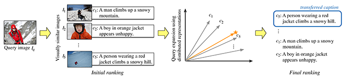
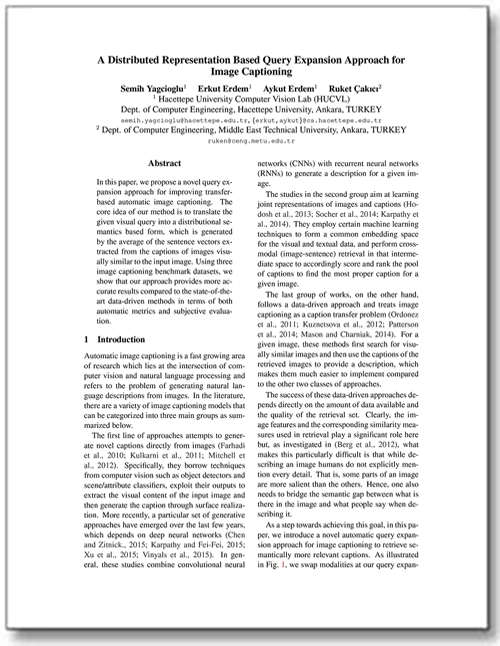
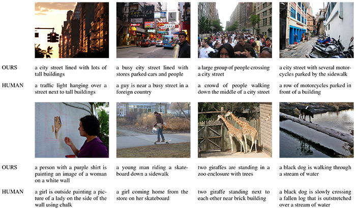

A Distributed Representation Based Query Expansion Approach for Image Captioning
The 53rd Annual Meeting of the Association for Computational Linguistics (ACL 2015)
Semih Yagcioglu1
Erkut Erdem1
Aykut Erdem1
Ruket Çakıcı21Hacettepe University Computer Vision Lab (HUCVL)
Dept. of Computer Engineering, Hacettepe University, Ankara, TURKEY
2Dept. of Computer Engineering, Middle East Technical University, Ankara, TURKEY
Dept. of Computer Engineering, Hacettepe University, Ankara, TURKEY
2Dept. of Computer Engineering, Middle East Technical University, Ankara, TURKEY
|  |
Abstract
In this paper, we propose a novel query expansion approach for improving transfer-based automatic image captioning. The core idea of our method is to translate the given visual query into a distributional semantics based form, which is generated by the average of the sentence vectors extracted from the captions of images visually similar to the input image. Using three image captioning benchmark datasets, we show that our approach provides more accurate results compared to the state-of-the-art data-driven methods in terms of both automatic metrics and subjective evaluation.
Paper
image-captioning-acl2015.pdf (1.6MB)Supplementary Material
Supplementary Notes - image-captioning-notes-acl2015.pdf (4.1MB)Slides image-captioning-slides-acl2015.pdf (2.3MB)
Poster image-captioning-poster.pdf (0.6MB)
Results
|  |
Code
Python code is available at Github Repository - You can also download as master.zipCitation
S. Yagcioglu, E. Erdem, A. Erdem, R. Çakıcı. A Distributed Representation Based Query Expansion Approach for Image Captioning. The 53rd Annual Meeting of the Association for Computational Linguistics and The 7th International Joint Conference of the Asian Federation of Natural Language Processing (ACL-IJCNLP 2015), Beijing, China, July 2015
Bibtex
@inproceedings{yagcioglu2015captioning,
author = {Yagcioglu, Semih and Erdem, Erkut and Erdem, Aykut and Çakıcı Ruket},
title = {A Distributed Representation Based Query Expansion Approach for Image Captioning},
booktitle = {Proceedings of the 53rd Annual Meeting of the Association for Computational Linguistics and The 7th International Joint Conference of the Asian Federation of Natural Language Processing},
year = {2015},
organization = {ACL}}
Acknowledgments
This research was supported in part by The Scientific and Technological Research Council of Turkey (TUBITAK), with award no 113E116.
Contact
For comments and questions, please contact Semih Yagcioglu.
Copyright
The documents contained in these directories are included by the contributing authors as a means to ensure timely dissemination of scholarly and technical work on a non-commercial basis. Copyright and all rights therein are maintained by the authors or by other copyright holders, notwithstanding that they have offered their works here electronically. It is understood that all persons copying this information will adhere to the terms and constraints invoked by each author's copyright. These works may not be reposted without explicit permission of the copyright holder.